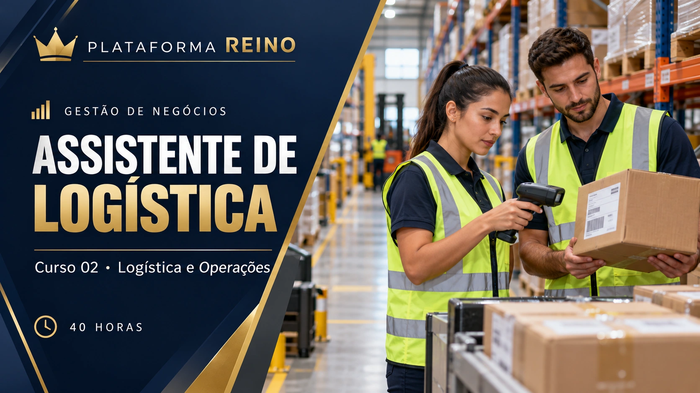
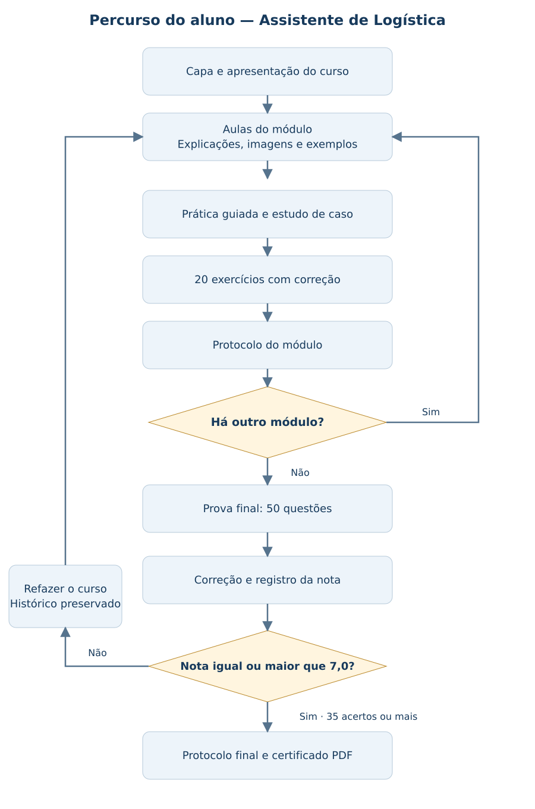

GESTÃO DE NEGÓCIOS · CURSO 02 · 40 HORAS
Assistente de Logística
Logística e Operações
CONTEÚDO AUTORAL
Desenvolvido por Khassio Silva · Plataforma Reino
Grade curricular e metodologia
Objetivo: preparar o aluno para apoiar pedidos, recebimentos, estoque, separação, expedição, entregas e registros logísticos.
Público: iniciantes e profissionais em atualização. Requisitos: leitura, escrita e operações matemáticas básicas; acesso à internet.
| Módulo | Carga horária | Competência |
|---|---|---|
| 1. Fundamentos e documentação logística | 8h | Mapear o fluxo logístico e registrar pedidos e documentos com organização. |
| 2. Recebimento e armazenagem | 8h | Conferir recebimentos, tratar divergências e organizar a armazenagem. |
| 3. Estoque, inventário e ferramentas digitais | 8h | Controlar movimentações, contar estoque e apoiar decisões de reposição. |
| 4. Separação, expedição e transportes | 7h | Separar pedidos, conferir volumes e acompanhar transporte e expedição. |
| 5. Entregas, retornos e melhoria contínua | 7h | Acompanhar entregas, encaminhar retornos e avaliar indicadores de melhoria. |
| Revisão e prova final | 2h | Revisar e resolver 50 questões. |
| Total | 40h | 25 aulas, 5 práticas, 100 exercícios e 50 questões finais. |
Como aprender
Estude a explicação, observe a imagem e o esquema, analise o exemplo e realize o exercício guiado. Ao fim de cada módulo, registre a prática e responda 20 questões com correção comentada e protocolo.
Os exercícios são formativos. Conclua o percurso para fazer a prova final de 50 questões. Nota mínima 7,0 (35 acertos) libera o certificado. Em caso de reprovação, inicie um novo ciclo do curso.
As 40 horas são um planejamento de estudo. A formação é introdutória e não habilita para operar equipamentos que exigem capacitação específica.
Conteúdos
Módulo 1 — Fundamentos e documentação logística
- Cadeia logística e papel do assistente
- Fluxo físico e fluxo de informação
- Pedido, prazo e nível de serviço
- Documentos e rastreabilidade
- Segurança e organização do trabalho
Módulo 2 — Recebimento e armazenagem
- Programação do recebimento
- Conferência quantitativa e qualitativa
- Avarias, divergências e quarentena
- Endereçamento e armazenagem
- PEPS, FEFO e conservação
Módulo 3 — Estoque, inventário e ferramentas digitais
- Cadastro e movimentações de estoque
- Inventário e tratamento de diferenças
- Classificação ABC
- Reposição e ponto de pedido
- Planilhas, WMS e qualidade dos dados
Módulo 4 — Separação, expedição e transportes
- Separação e conferência de pedidos
- Embalagem e identificação
- Expedição e comprovantes
- Transportes e escolha operacional
- Roteirização e acompanhamento
Módulo 5 — Entregas, retornos e melhoria contínua
- Devoluções e logística reversa
- Indicadores logísticos
- Ocorrências e melhoria contínua
- Custos e comunicação da operação
- Projeto integrador de operação logística
Carregando seu curso…
Seu percurso no curso
Conclua os cinco módulos antes da prova final. O certificado é liberado com pelo menos 35 acertos nas 50 questões.
Abrir fluxograma completo
Referências e organização
Curso autoral da Plataforma Reino. As fontes apoiam o estudo; não representam parceria ou certificação pelas instituições citadas.
As 40 horas correspondem ao planejamento de aulas, práticas, revisão e prova. Organize sua agenda para realizar todas as atividades.